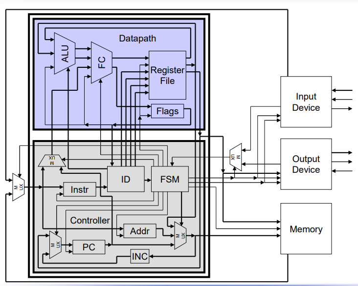

Master's student in Microelectronics and Chip Design at TUM, with a strong foundation in digital and analog circuits, FPGA design, and hardware verification.
I'm passionate about the intersection of digital hardware design and systems engineering — from RTL all the way to silicon. My work spans FPGA prototyping, hardware performance analysis, and chip design flows using industry-standard tools and PDKs.
With experience at AES Aerospace and within TUM's Chair of Integrated Systems, I bring both academic rigor and real-world engineering discipline to every project I work on.
Hardware Design
VHDLVerilogRTL2GDSFPGA
Programming
CMATLAB
Tools
LTSpiceGitIBM DOORS
Documentation
LaTeXWord
Selected Work
Academic Projects
2025 · Bachelor Thesis · Grade 1.0
Hardware Performance Counter Unit
Designed and integrated a non-intrusive hardware PCU into an FPGA-based memory controller within TUM's CeCaS automotive computing project. The unit monitors 10 distinct internal metrics — from FSM utilization to eviction reuse patterns — verified via RTL simulation and FPGA prototyping on a Virtex-7 system.
VHDLFPGARTL SimMemory SystemsAHB
TUM · Grade 1.1
RISC-V Processor Design
Custom RISC-V CPU implemented in VHDL by a team of 4, following a reduced ISA specification. Covers a partially pipelined datapath, FSM-based control unit, memory interface, and opcode procedures.
VHDLRISC-VCPU Design
TUM · Grade 1.0
Baseband Processor Design
Developed a Verilog-based baseband processor implementing UART, Huffman coding, Viterbi decoding, and QAM modulation. Verified end-to-end on FPGA hardware.
VerilogFPGADSPQAM
TUM · MACHT-AI
16nm FinFET TSMC RTL2GDS
Participated in a hands-on chip design workshop executing a full RTL-to-GDS flow using the 16nm TSMC PDK — from synthesis to physical layout and signoff.
RTL2GDS16nm FinFETTSMC PDK
Professional Experience
Where I've worked
04/2025 – 08/2025 Munich
TUM, Chair of Integrated Systems
Bachelor Thesis
Designed and integrated a hardware performance counter within an FPGA-based Preload Unit
Implemented VHDL-based metric collection and software-side data evaluation
Verified correctness through RTL simulation and FPGA prototyping
Evaluated design under realistic memory workloads — thesis graded 1.0
04/2024 – 12/2024 Munich
AES Aerospace Embedded Solutions GmbH
Working Student
Extended MATLAB Model Advisor with custom rule checks for automatic HDL violation detection
Evaluated and validated model-based FPGA design flows per DO-254 standard
Integrated and verified requirements using IBM DOORS and MATLAB
Supported verification processes including code coverage analysis
Education
Academic background
10/2025 – Present
M.Sc. Microelectronics and Chip Design
Technical University of Munich (TUM)
Current Grade: 1.0
10/2022 – 08/2025
B.Sc. Electrical Engineering
Technical University of Munich (TUM)
Final Grade: 1.5 · Thesis Grade: 1.0
09/2015 – 06/2022
German Abitur
Erasmus-Grasser-Gymnasium, Munich
Final Grade: 1.2 · Scientific Work: "LiDAR as a Key Technology for Autonomous Driving" (30/30)
A fully functional CPU was designed and implemented in VHDL by a group of four students, strictly following a reduced RISC-V Instruction Set Architecture specification. The processor features a partially pipelined architecture — starting from a single-cycle baseline and progressively introducing pipelining — with a clean separation between the datapath and the control unit.

System architecture: Datapath (ALU, Register File, Flags), Controller with FSM-based instruction decode, and Memory interface with input/output devices.
Architecture
The processor is structured around two main blocks. The Datapath contains the ALU, forwarding control logic (FC), a register file, and a flags register for condition tracking. The Control Unit handles instruction fetch and decode (ID), program counter management (PC with incrementer), address generation, and a central FSM that sequences all control signals across the execution pipeline.
External to the core, the design interfaces with a Memory module and separate Input/Output devices through a multiplexed bus — a realistic system-level integration that goes beyond a bare CPU core.
Implementation Approach
A key design decision was encoding each ISA opcode as a dedicated VHDL procedure. Rather than implementing instruction behavior through large case statements or inline signal assignments, each operation is encapsulated as a self-contained procedure call within the control FSM. This approach significantly improves readability, keeps the code modular, and makes it straightforward to add or modify individual instructions without touching unrelated logic.
Each instruction in the reduced ISA maps to a named VHDL procedure — separating the what (instruction semantics) from the how (FSM sequencing), resulting in clean, maintainable RTL code.
My Contribution
Within the four-person team, my focus was on three areas. I designed and implemented the memory interface — managing the read/write handshake between the CPU and the external memory module, including address multiplexing and data bus control. I also implemented the VHDL procedure library for the ISA opcodes, translating the instruction specification directly into synthesizable RTL. Finally, I contributed to the integration of the individual components built by the team, resolving interface mismatches and ensuring the full system functioned correctly end-to-end.
This thesis was conducted within the CeCaS (Central Car Server) project — a national German research initiative involving 28 partners (including Infineon Technologies, Fraunhofer Institutes, and TUM) developing next-generation automotive computing platforms.
At the heart of the problem is the memory wall: modern embedded processors far outpace off-chip DRAM bandwidth, and automotive systems compound this by adding hardware encryption and integrity checking to every memory transaction. To mask these latencies, TUM's Chair of Integrated Systems developed the SASSMC (Self-Adaptive Safe and Secure Memory Controller), which includes a hardware-based Preload Unit that proactively fetches 1 KB data pages into an on-chip SRAM buffer ahead of demand.
Simplified SASSMC system architecture. The PCU (highlighted) is integrated inside the Preload Unit and communicates with a dedicated Debug Interface slave on the AHB bus.
The Preload Unit & The Problem to Solve
The Preload Unit sits between the last-level cache and the DRAM controller. It consists of four internal submodules: a Main FSM handling CPU request arbitration, a Preload FSM executing background page fetches, an Address Manager maintaining a 256-index 4-way set-associative address table, and a Queue Manager that spatially prioritizes pending preload requests. Together they maintain an on-chip buffer of up to 1024 pages.
Before this thesis, there was no systematic way to observe what was happening inside this unit at runtime — whether pages were being used before eviction, whether the preload queue was under pressure, or whether the eviction policy was causing unnecessary reloads. The Performance Counter Unit was built to answer exactly these questions, non-intrusively and with zero overhead in production.
Architecture of the PCU
The PCU is instantiated directly inside the Preload Unit. It passively sniffs internal signals from all four submodules — never altering any control path — and processes them into a compact set of performance metrics. A dedicated AHB slave debug interface (at address range 0xFFE02xxx) exposes all counters as memory-mapped 32-bit registers, readable by software at any time.
A key design decision was to use conditional synthesis via if generate statements, meaning the PCU and debug module can be completely excluded from production builds at zero resource cost, making it a pure development and validation tool.
A 32-bit prescaler-protected time counter provides a common temporal reference across all metrics, extending overflow-safe measurement to ~46 minutes at 100 MHz — sufficient for all benchmarks.
The 10 Implemented Metrics
The PCU implements 10 metric groups — a carefully selected subset of the many possible internal signals, each chosen to answer a specific diagnostic question about the Preload Unit's behavior.
M1
Main FSM Temporal Behavior
To quantify how much time the controller spends idle vs. actively serving requests — a direct measure of system load.
M2
Preload FSM Temporal Behavior
To measure individual preload durations and their variance — since CPU interrupts can pause any in-progress fetch, duration is not constant.
M3
CPU Request Categorization
The core KPI: classifying each access as a read/write hit or miss directly quantifies whether prefetching is succeeding in reducing DRAM accesses.
M4
Preload Interrupts
To understand how often CPU requests disrupt ongoing preloads — a key factor explaining variable preload durations and potential queue reordering.
M5
Spatial Distance
To compare spatial locality of CPU accesses against the preload scheduling order, revealing whether the queue's prioritization exploits locality effectively.
M6
Unused Pages
To detect wasted bandwidth — pages fetched into the buffer but evicted before any CPU read. A high count signals suboptimal prefetch prioritization.
M7
Bit-rates
To decompose DDR bandwidth by traffic type (preloads, read misses, write hits/misses), revealing which component drives memory bus pressure.
M8
Preload Buffer Utilization
To track how quickly the buffer fills over time and detect whether evictions stem from genuine capacity pressure or suboptimal replacement choices.
M9
Evict-Reuse Patterns
To catch premature evictions — cases where a recently removed page is immediately re-needed, indicating a poor replacement strategy.
M10
Queue Fill Behavior
To assess whether the preload queue operates near saturation or stays underutilized, and whether overwrite events occur under high memory pressure.
PCU signal flow. All four Preload Unit submodules are passively observed. Metrics are forwarded to software via a dedicated AHB debug slave — no signals are fed back into the system.
Verification Strategy
Each metric was verified in two stages. First, through RTL simulation with waveform inspection (cycle-accurate tracking of FSM states, counter updates, and signal transitions). Second, by FPGA deployment on the proFPGA platform — a rack of four Xilinx Virtex-7 XC7V2000T FPGAs capable of running up to 80 LEON3 softcore processors. Register readouts via the debug interface were cross-validated against simulation and hand-calculated references. Where discrepancies appeared, Xilinx ILA (Integrated Logic Analyzer) probing was used to isolate root causes.
To control complexity in the cache hierarchy, synthetic C programs were written — each triggering a specific behavior (e.g. forced evictions, scattered accesses, controlled spatial jumps) — typically generating fewer than 20 memory operations for unambiguous analysis.
Evaluation
To demonstrate the PCU's diagnostic value, two micro-benchmarks were run on the proFPGA platform: Bubblesort and Quicksort, applied to integer arrays at seven input sizes (N = 10 to 10,000), with the L2 cache disabled to expose raw preload behavior. The two algorithms were chosen deliberately — Bubblesort accesses memory in a sequential, spatially local pattern, while Quicksort's recursive partitioning produces increasingly scattered accesses as N grows, stressing different aspects of the Preload Unit.
The temporal metrics (M1, M2) revealed how system utilization and preload duration evolve with input size, and quantified how interrupt pressure from the CPU distorts preload timing. The request categorization metric (M3) served as the primary effectiveness indicator across all runs, while the spatial distance histograms (M5) made the algorithmic difference between the two sorting strategies directly observable at the hardware level — a pattern invisible from runtime alone. The queue histogram (M10) exposed the queue's saturation dynamics under Quicksort's scattered access pattern, enabling conclusions about queue dimensioning. The evict-reuse and unused pages metrics (M6, M9) provided a direct verdict on the replacement policy's soundness. Finally, the bandwidth breakdown (M7) revealed the shifting composition of DDR traffic across input sizes, connecting high-level behavior to bus-level resource usage.
Together, the metrics enabled multi-dimensional conclusions that would have been impossible to draw from runtime performance figures alone — in particular, distinguishing which behavioral differences between the two algorithms are attributable to the prefetching mechanism versus the application's own memory access pattern.
FPGA Resource Footprint
The PCU consumes approximately 60% of the Preload Unit's LUTs and 75% of its registers — but these represent less than 1% of the total Virtex-7 device. The debug module adds a further negligible share. Both are fully gated out in production via conditional generate, leaving zero overhead in deployment builds.